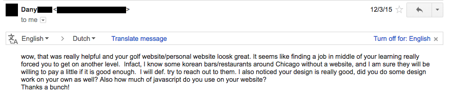
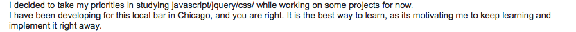

I thought that this was all I needed to do in order for me to start creating the next Facebook.
I blew through the Codecademy HTML/CSS and JavaScript/jQuery course and then quickly enrolled in CS50 (online introductory computer science course held by Harvard). Phew! After I finish CS50, I'll be amazing! - or so I thought.
For the first 3 lectures, I sat in my "virtual class environment" (my sofa + laptop) super excited about programming. And of course, as any one supposedly embarking on a new adventure would, I thought CS50 was going to change my life. The lecturer was super easy to understand, energetic, and to the point. They did a great job presenting the information and I thought I was learning a whole lot.
But then after a couple of lectures, I was confused as #%!&. Pointers? Memory allocation? Programming suddenly seemed like a super complex thing to learn. The course went on about bubble sorts and merge sorts and all sorts of sorts. I was becoming more and more confused and I simply couldn't manage my motivation.
My mind was spiraling with negative thoughts: "I'm not smart enough for this. Coding is for smart people. Coding is for mathy people. I'm not fit for this."
Plus, even though I breezed through the Codecademy stuff, I had forgot most of the stuff that I had learned in a matter of a few weeks! This was a terrible, terrible investment of my time.
Then in August 2015, I had the urge to give coding a try once again and joined a coding bootcamp called The Firehose Project. It was the best decision I made that year. (I talk more about coding bootcamps in this post and how it has changed my life in many ways in non-woowoo pseudo-science ways.)
In short, the coding bootcamp was a super positive experience for me and lead me to land multiple jobs as a developer as well as dive deeper into programming and eventually computer science as well. The bootcamp's teaching methodologies enabled me to learn much quicker and much faster than going through Codecademy or CS50 or anything of that sort.
The first step is to learn and understand. Here's exactly how I go about it:
The material you use for learning programming is super important. If you are spending 10 hours learning something, then the 10 hours better be spent learning material that is relevant and easy to understand. You don't want to spend hours and hours on resources that are hard to understand or not engaging - they are simply just a waste of time.
You'll see sites like Codecademy come up in your Google search, and you might be wondering if it's actually a good resource since I mentioned how it didn't work for me earlier in this post.
Despite my lack of success with Codecademy initially, I actually recommend it (and also websites similar to it) - it's great for learning the gist of the language. However, the important thing is to transition to Step 2 immediately after finishing this step. Otherwise, you'll just forget most of the stuff you learned (like I did initially).
You now understand the gist of the programming language or framework and how it works.
The next step is to build and break. This means going out and actually building something with the stuff you just learned and then fixing bugs as they come along. Bugs are inevitable, but you can learn a lot from bugs and broken code. You want to start building with the assumption that you're going to be writing bad code - and then improving it.
There are 2 steps to this, in my opinion. First, it's smart to go through some tutorials, or else you'll be completely lost. Once you've done some tutorials and feel comfortable, you should go and build your own project:
Again, finding good tutorials are key here. Many times, the reputable tutorials show up in the results in Step 1, when searching for resources on whatever you're trying to learn.
If you've finished a tutorial or two and feel like you're ready to start building your app.
In this step, you're going to be building your own project. Not following tutorials, not following directions. You're going to have to do everything yourself - but this is where you'll learn the most.
In my experience, picking a project to work on is the most difficult part of this process. This is because if you pick a project that is a lousy idea, you just won't stick with it.
For example, one time I tried building a diary app with Ruby on Rails for no reason. After building out some of the basic functionality, I realized that Google Drive does the job better and it gave me no reason to keep building the app - never try building something for no reason.
TRUE.
If someone is paying you to build something, you're going to work your butt off to try and get everything right. You're going to be forced to learn at a super high speed in order to not mess anything up.
A lot of people want websites or web applications built for them, but lack the money to hire developers. They have ideas, but they lack the skills to actually build them. This is their thought process:
"I have an idea that will make millions and will be the next (Facebook, Uber, replace popular start up name here) - if only I had a coder to build my app."
This is where you come in. Find these people and talk to them. Offer your services for super cheap at first and make an offer so sweet that they have no reason to reject you.
This was how I pitched myself to 2 guys who wanted to build a company based on a web app: "Yes, I am indeed a noob, but if you hire non-noobs, it will cost you tens of thousands. If you hire me, I can build out this app and it won't cost you tens of thousands. Instead, it will only be hundreds or maybe a couple thousand at most. Plus, if you don't like the website, you can decide not to use it and pay me nothing."
What was the number one thing they wanted? Their idea to be built out.
What was their number one constraint? Money.
If I were to pitch them, what would be their number one concern? That I wasn't skilled enough and would be a waste of money.
My pitch incorporated all of these factors so that they had no reason to reject my offer. If they didn't like the website, they could scrap it and pay nothing.
To initially build a portfolio, I personally think that it's a smart idea to price low and over-deliver (unless you're already experienced). As a side note, I did this when I first started my translation business as well and it worked that time as well. I priced my services lower than my competitors and over-delivered and built social proof.
Would it be my price, my skill set, my past experiences, or some other factor?
Since I had minimal skill to do the job, had no past experience, the only way I could differentiate was to set a lower price and work my butt off. And for a lot of people reading this article, I'm assuming this is probably the case.
So find somebody to build a website for, give a pitch that they can't turn down, and start working on the project. Once you pass this step, it's time to do anything you can do to finish the app and build something that would satisfy your clients.
This means Googling for solutions to any bugs/problems you might encounter, asking people questions, and finding solutions.
I've given this advice to some people that were just starting out with their coding journey and it seems to have worked for them. One of my friends from The Firehose Project, Dany, asked for my advice. I told him mostly the same things that I laid out in this blog post and this was his response.

When I talked to him a couple of months after that, he told me that he took some of my advice and things were going quite well for him:

I've given the same advice to other people with the same results. It seems that it just makes sense - when you are forced to learn at an accelerated pace, you'll learn more quicker as a result.
Hopefully this blog post was somewhat helpful in motivating you to go out and grab a project that you can start working on (while maybe getting paid) to accelerate your learning speeds. This is something that's worked for me and the people around me, and I hope it works for the people reading this as well!